7 Statistical Testing: Comparing Means
7.1 Introduction to Hypothesis Testing
In sport business analytics, we often need to answer questions like:
- Does a new training program significantly improve player performance?
- Is there a difference in ticket sales between promotional and non-promotional games?
- Do different marketing strategies lead to different levels of fan engagement?
Descriptive statistics tell us what happened in our data. Inferential statistics help us determine whether observed differences are real (statistically significant) or simply due to chance.
This chapter covers the fundamental tests for comparing means:
- t-tests: Compare means between two groups
- ANOVA: Compare means among three or more groups
Key Terms Quick Reference
Statistical testing terminology for comparing means:
|——|———-||———| | Hypothesis Testing | Using statistics to test whether an observed effect is real or due to chance | Does the new training program really work? | | Null Hypothesis (H₀) | No difference exists between groups | Training program has no effect | | Alternative Hypothesis (H₁) | There is a difference between groups | Training program improves performance | | p-value | Probability of observing results if H₀ is true | p = 0.03 means 3% chance results are due to luck | | Significance Level (α) | Threshold for rejecting H₀ (usually 0.05) | If p < 0.05, we reject H₀ | | Statistically Significant | Results unlikely due to chance alone | p < 0.05 suggests real difference | | t-test | Compare means of two groups | Weekend vs. weekday ticket sales | | ANOVA | Compare means of 3+ groups | Ticket sales across all days of week | | Z-score | How many SDs a value is from the mean | Player’s performance is 2 SDs above average | | Degrees of Freedom (df) | Number of values free to vary in calculation | n - 1 for one sample | | Effect Size | Magnitude of difference (Cohen’s d) | d = 0.8 is large effect | | Type I Error | Rejecting true H₀ (false positive) | Claiming program works when it doesn’t | | Type II Error | Failing to reject false H₀ (false negative) | Missing a real effect |
Why This Matters to Sport Business: You invest $50,000 in a new marketing campaign and sales increase by 5%. Is that increase real, or just random variation? Statistical testing answers this. Without it, you might cancel effective programs or keep ineffective ones, wasting thousands.
7.2 Understanding Z-Scores and T-Scores
7.2.1 Z-Scores
A Z-score (also called a standard score) measures how many standard deviations a data point is from the mean of a dataset.
Formula: Z = (X - μ) / σ
where: - X = data point - μ = population mean - σ = population standard deviation
# Example: Basketball player free-throw percentage
league_mean <- 75 # League average
league_sd <- 5 # League standard deviation
player_pct <- 85 # Player's percentage
# Calculate Z-score
z_score <- (player_pct - league_mean) / league_sd
z_score## [1] 2# Interpretation
cat("A Z-score of", z_score, "means this player's free-throw percentage is",
z_score, "standard deviations above the league average.\n")## A Z-score of 2 means this player's free-throw percentage is 2 standard deviations above the league average.Interpretation: - Z = 0: Value is exactly at the mean - Z > 0: Value is above the mean - Z < 0: Value is below the mean - |Z| > 2: Value is unusually high or low (in the extreme 5%)
7.2.2 Z-Scores in Sport Analytics
# Create dataset of player performance
players <- data.frame(
player = paste("Player", LETTERS[1:20]),
points_per_game = c(18.5, 22.3, 15.7, 28.1, 12.3, 19.8, 25.4, 16.2,
20.1, 14.6, 23.7, 17.9, 21.5, 13.8, 26.3, 19.2,
24.1, 15.3, 22.8, 17.5)
)
# Calculate Z-scores for all players
players$z_score <- scale(players$points_per_game)
# View top and bottom performers
players %>%
arrange(desc(z_score)) %>%
select(player, points_per_game, z_score) %>%
slice(c(1:3, (n()-2):n()))## player points_per_game z_score
## 1 Player D 28.1 1.879276
## 2 Player O 26.3 1.473920
## 3 Player G 25.4 1.271242
## 4 Player J 14.6 -1.160895
## 5 Player N 13.8 -1.341053
## 6 Player E 12.3 -1.678850# Visualize
ggplot(players, aes(x = reorder(player, z_score), y = z_score)) +
geom_col(aes(fill = z_score > 0)) +
geom_hline(yintercept = c(-2, 0, 2), linetype = "dashed", color = "red") +
coord_flip() +
scale_fill_manual(values = c("FALSE" = "steelblue", "TRUE" = "darkgreen")) +
labs(title = "Player Performance Z-Scores",
subtitle = "Dashed lines show ±2 SD boundaries",
x = "Player", y = "Z-Score") +
theme_minimal() +
theme(legend.position = "none")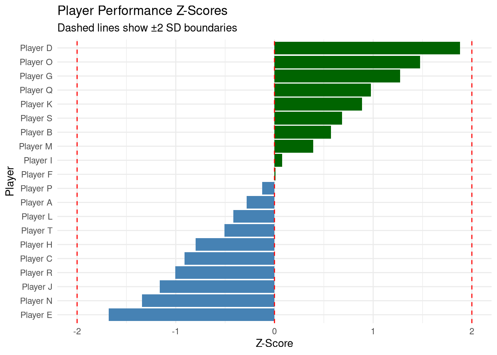
7.2.3 T-Scores
A T-score is similar to a Z-score but is used when: - Sample size is small (typically n < 30) - Population standard deviation is unknown
Formula: T = (X̄ - μ) / (s / √n)
where: - X̄ = sample mean - μ = population mean - s = sample standard deviation - n = sample size
# Example: Vertical jump improvement after training
n_players <- 15
mean_before <- 28 # inches (population average)
mean_after <- 30 # inches (sample mean after training)
sd_after <- 2 # inches (sample SD)
# Calculate t-score
t_score <- (mean_after - mean_before) / (sd_after / sqrt(n_players))
t_score## [1] 3.872983# Degrees of freedom
df <- n_players - 1
# Critical value at α = 0.05, two-tailed
critical_value <- qt(0.975, df)
cat("t-score:", round(t_score, 3), "\n")## t-score: 3.873## Critical value (df = 14 ): 2.145cat("Result:", ifelse(abs(t_score) > critical_value,
"Reject null hypothesis - training had significant effect",
"Fail to reject null hypothesis - no significant effect"), "\n")## Result: Reject null hypothesis - training had significant effectKey difference: T-scores account for sample size uncertainty through degrees of freedom, making them more conservative (harder to achieve significance) with smaller samples.
7.3 Understanding P-Values
The p-value is the probability of observing your data (or more extreme data) if the null hypothesis is true.
7.3.1 Null and Alternative Hypotheses
Null Hypothesis (H₀): States that there is no effect or no difference - Example: A new training program has no effect on performance
Alternative Hypothesis (H₁): States that there is an effect or is a difference - Example: A new training program does affect performance
7.3.2 Interpreting P-Values
Significance threshold: Typically α = 0.05
- p ≤ 0.05: Reject null hypothesis (statistically significant)
- Less than 5% probability results occurred by chance
- p > 0.05: Fail to reject null hypothesis (not statistically significant)
- Insufficient evidence to conclude there is an effect
# Visualize p-value concept
x <- seq(-4, 4, length = 1000)
y <- dt(x, df = 20)
# Create data frame
t_dist_data <- data.frame(x = x, y = y)
# Observed t-statistic
t_obs <- 2.5
# Shaded region for p-value
shade_data <- t_dist_data %>%
filter(abs(x) >= t_obs)
ggplot(t_dist_data, aes(x = x, y = y)) +
geom_line(color = "black", linewidth = 1) +
geom_area(data = shade_data, fill = "red", alpha = 0.5) +
geom_vline(xintercept = c(-t_obs, t_obs), linetype = "dashed", color = "blue") +
annotate("text", x = t_obs + 0.5, y = max(y) * 0.5,
label = paste("t =", t_obs), color = "blue") +
annotate("text", x = 0, y = max(y) * 0.3,
label = "Fail to reject H₀", size = 5) +
annotate("text", x = 3, y = 0.05,
label = "p-value region", color = "red", size = 4) +
labs(title = "T-Distribution Showing P-Value",
subtitle = "Shaded areas represent the p-value for two-tailed test",
x = "t-statistic", y = "Density") +
theme_minimal()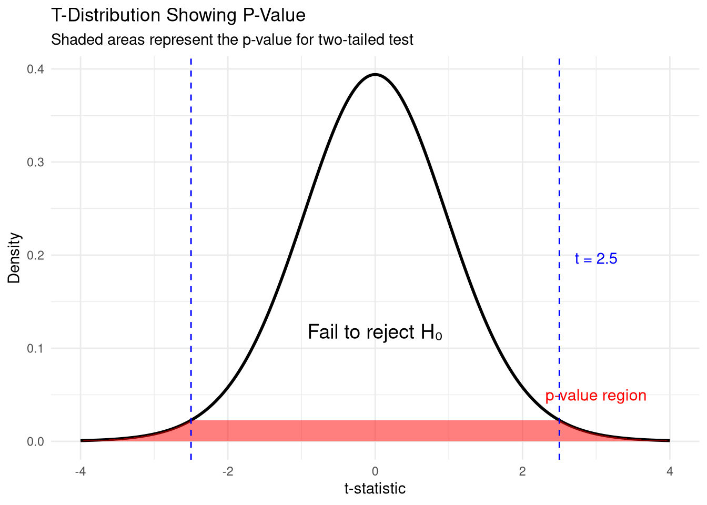
7.3.3 Important Notes About P-Values
What p-values DO NOT tell you:
- Not the probability that H₀ is true: p = 0.03 does not mean there’s a 3% chance the null hypothesis is true
- Not the size of the effect: A very small effect can be “significant” with a large sample
- Not practical significance: Statistical significance ≠ practical importance
Example of statistical vs. practical significance:
# Scenario: Sprint time improvement
improvement_seconds <- 0.003
p_value <- 0.01
cat("Sprint time improvement:", improvement_seconds, "seconds\n")## Sprint time improvement: 0.003 seconds## P-value: 0.01## Statistically significant? YES (p < 0.05)## Practically significant? Probably NO (0.003 seconds is negligible)7.4 T-Tests: Comparing Two Groups
T-tests are used to compare the means of two groups to determine if they are statistically different.
7.4.1 Types of T-Tests
- One-Sample t-test: Compare sample mean to a known population mean
- Independent Samples t-test: Compare means of two different groups
- Paired Samples t-test: Compare means of the same group at two different times
7.4.2 One-Sample T-Test
Purpose: Test if a sample mean differs significantly from a known or hypothesized population mean.
Assumptions: 1. Data is approximately normally distributed 2. Sample is randomly selected 3. Data is continuous (not categorical)
# Example: Testing if class height differs from national average
national_avg_height <- 5.6 # feet
class_heights <- c(5.8, 5.7, 6.0, 5.9, 5.5, 5.7, 6.1, 5.8, 5.6, 6.2,
5.9, 5.7, 6.0, 5.8, 5.9, 5.7, 6.1, 5.8, 5.6, 5.9,
6.0, 5.8, 5.7, 5.9, 6.0)
# Perform one-sample t-test
one_sample_result <- t.test(class_heights, mu = national_avg_height)
# Display results
print(one_sample_result)##
## One Sample t-test
##
## data: class_heights
## t = 7.0359, df = 24, p-value = 2.833e-07
## alternative hypothesis: true mean is not equal to 5.6
## 95 percent confidence interval:
## 5.772425 5.915575
## sample estimates:
## mean of x
## 5.844##
## Interpretation:## Sample mean: 5.84 feet## Population mean: 5.6 feet## p-value: 0cat("Decision:", ifelse(one_sample_result$p.value < 0.05,
"Reject H₀: Class height differs significantly from national average",
"Fail to reject H₀: No significant difference"), "\n")## Decision: Reject H₀: Class height differs significantly from national averageSport Business Application: Ticket Pricing
# Test if your team's average ticket price differs from league average
league_avg_price <- 45 # dollars
team_ticket_prices <- c(52, 48, 55, 50, 47, 53, 49, 51, 54, 48,
50, 52, 49, 53, 51)
# Perform test
ticket_test <- t.test(team_ticket_prices, mu = league_avg_price)
cat("League average ticket price: $", league_avg_price, "\n")## League average ticket price: $ 45## Team average ticket price: $ 50.8## p-value: 0cat("\nConclusion:", ifelse(ticket_test$p.value < 0.05,
"Your team's prices are significantly different from league average",
"Your team's prices are not significantly different from league average"), "\n")##
## Conclusion: Your team's prices are significantly different from league average7.4.3 Independent Samples T-Test
Purpose: Compare means of two independent groups.
Assumptions: 1. Two groups are independent of each other 2. Data is approximately normally distributed in both groups 3. Groups have equal variances (homogeneity of variance) 4. Data is continuous
# Example: Compare test scores between two classes
class1_scores <- c(78, 82, 75, 88, 79, 85, 77, 81, 83, 76, 80, 84, 79, 77, 82)
class2_scores <- c(85, 88, 82, 91, 86, 89, 83, 87, 90, 84, 86, 88)
# Create data frame
class_data <- data.frame(
score = c(class1_scores, class2_scores),
class = c(rep("Class 1", length(class1_scores)),
rep("Class 2", length(class2_scores)))
)
# Check equal variance assumption (Levene's test)
levene_result <- leveneTest(score ~ class, data = class_data)
cat("Levene's Test for Homogeneity of Variance:\n")## Levene's Test for Homogeneity of Variance:## Levene's Test for Homogeneity of Variance (center = median)
## Df F value Pr(>F)
## group 1 0.9356 0.3427
## 25##
## Equal variances? YES# Perform independent samples t-test
independent_result <- t.test(score ~ class, data = class_data, var.equal = TRUE)
print(independent_result)##
## Two Sample t-test
##
## data: score by class
## t = -4.8534, df = 25, p-value = 5.447e-05
## alternative hypothesis: true difference in means between group Class 1 and group Class 2 is not equal to 0
## 95 percent confidence interval:
## -8.807205 -3.559462
## sample estimates:
## mean in group Class 1 mean in group Class 2
## 80.40000 86.58333# Visualize
ggplot(class_data, aes(x = class, y = score, fill = class)) +
geom_boxplot(alpha = 0.7) +
geom_jitter(width = 0.2, alpha = 0.5) +
stat_summary(fun = mean, geom = "point", shape = 23, size = 3,
fill = "red", color = "red") +
labs(title = "Comparison of Test Scores Between Classes",
subtitle = paste("p-value =", round(independent_result$p.value, 4)),
x = "Class", y = "Test Score") +
theme_minimal() +
theme(legend.position = "none")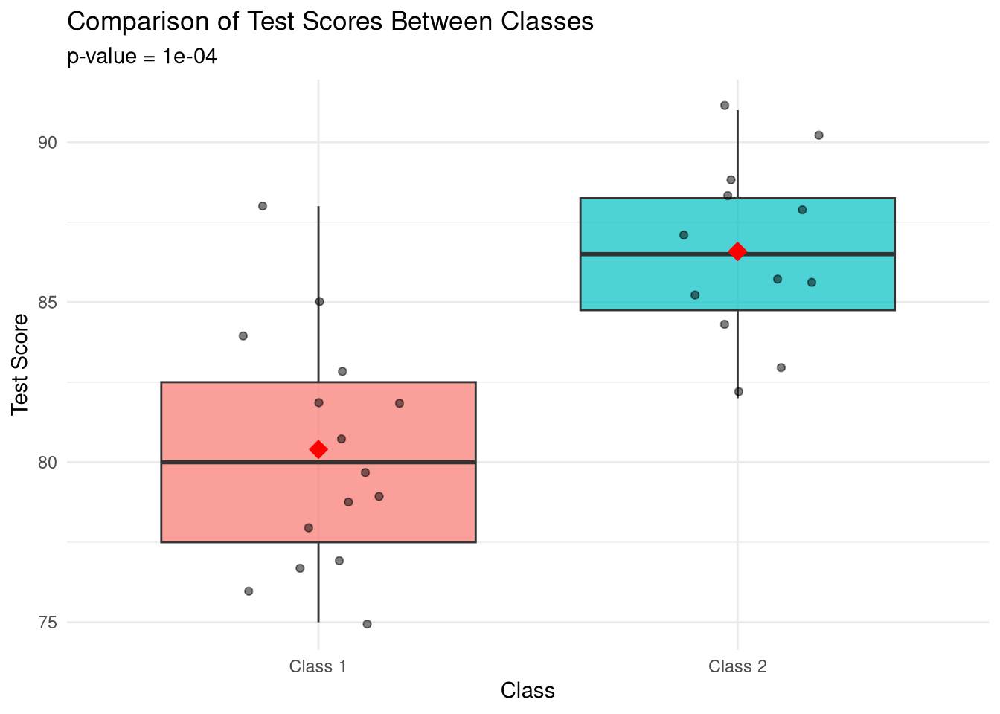
Sport Business Application: Promotional vs. Non-Promotional Games
# Compare attendance between promotional and non-promotional games
promo_attendance <- c(45000, 48000, 52000, 47000, 51000, 49000, 53000, 50000)
non_promo_attendance <- c(38000, 41000, 39000, 42000, 40000, 37000, 43000, 39000)
# Create data frame
attendance_data <- data.frame(
attendance = c(promo_attendance, non_promo_attendance),
type = c(rep("Promotional", length(promo_attendance)),
rep("Non-Promotional", length(non_promo_attendance)))
)
# Perform t-test
promo_test <- t.test(attendance ~ type, data = attendance_data, var.equal = TRUE)
# Results
cat("Promotional games - Mean attendance:", round(mean(promo_attendance), 0), "\n")## Promotional games - Mean attendance: 49375## Non-promotional games - Mean attendance: 39875## Difference: 9500## p-value: 0cat("\nConclusion:", ifelse(promo_test$p.value < 0.05,
"Promotional games have significantly higher attendance",
"No significant difference in attendance"), "\n")##
## Conclusion: Promotional games have significantly higher attendance7.4.4 Paired Samples T-Test
Purpose: Compare means of the same group at two different times or under two different conditions.
Assumptions: 1. Data is paired (same individuals measured twice) 2. Differences between pairs are approximately normally distributed 3. Data is continuous
# Example: Sprint times before and after training program
sprinters <- data.frame(
athlete = paste("Athlete", 1:10),
before = c(11.2, 10.8, 11.5, 10.9, 11.1, 10.7, 11.3, 10.6, 11.0, 10.9),
after = c(10.8, 10.5, 11.0, 10.6, 10.7, 10.4, 10.9, 10.3, 10.6, 10.5)
)
# Calculate differences
sprinters$improvement <- sprinters$before - sprinters$after
# Perform paired t-test
paired_result <- t.test(sprinters$before, sprinters$after, paired = TRUE)
print(paired_result)##
## Paired t-test
##
## data: sprinters$before and sprinters$after
## t = 17.335, df = 9, p-value = 3.192e-08
## alternative hypothesis: true mean difference is not equal to 0
## 95 percent confidence interval:
## 0.3217171 0.4182829
## sample estimates:
## mean difference
## 0.37# Visualize
sprinters_long <- sprinters %>%
pivot_longer(cols = c(before, after), names_to = "time", values_to = "sprint_time")
ggplot(sprinters_long, aes(x = time, y = sprint_time, group = athlete)) +
geom_line(color = "gray70") +
geom_point(aes(color = time), size = 3) +
stat_summary(aes(group = 1), fun = mean, geom = "line",
color = "red", linewidth = 1.5, linetype = "dashed") +
stat_summary(aes(group = 1), fun = mean, geom = "point",
color = "red", size = 4) +
scale_color_manual(values = c("before" = "steelblue", "after" = "darkgreen")) +
labs(title = "Sprint Times Before and After Training",
subtitle = paste("Mean improvement:", round(mean(sprinters$improvement), 2),
"seconds, p-value =", round(paired_result$p.value, 4)),
x = "Time Point", y = "Sprint Time (seconds)") +
theme_minimal()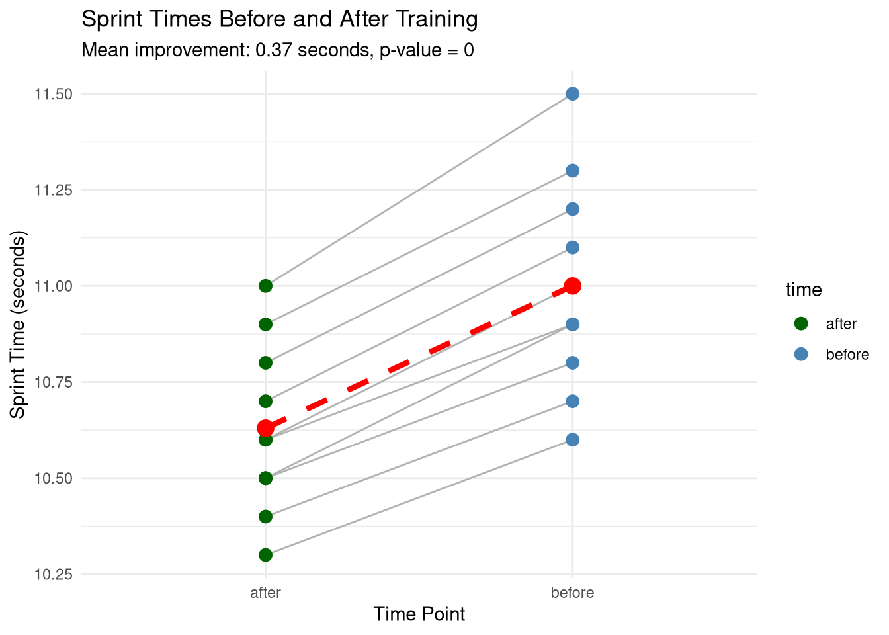
Sport Business Application: Season Ticket Renewal
# Compare customer satisfaction before and after service improvements
customers <- data.frame(
customer_id = 1:20,
satisfaction_before = c(6, 7, 5, 8, 6, 7, 5, 6, 7, 8,
6, 5, 7, 6, 8, 7, 6, 5, 7, 6),
satisfaction_after = c(8, 8, 7, 9, 7, 9, 6, 8, 8, 9,
7, 6, 8, 7, 9, 8, 7, 7, 8, 7)
)
# Perform paired t-test
satisfaction_test <- t.test(customers$satisfaction_before,
customers$satisfaction_after,
paired = TRUE)
cat("Mean satisfaction before:", round(mean(customers$satisfaction_before), 2), "\n")## Mean satisfaction before: 6.4## Mean satisfaction after: 7.65cat("Mean improvement:", round(mean(customers$satisfaction_after -
customers$satisfaction_before), 2), "\n")## Mean improvement: 1.25## p-value: 0cat("\nConclusion:", ifelse(satisfaction_test$p.value < 0.05,
"Service improvements significantly increased satisfaction",
"No significant change in satisfaction"), "\n")##
## Conclusion: Service improvements significantly increased satisfaction7.5 ANOVA: Comparing Three or More Groups
When you need to compare means across three or more groups, use ANOVA (Analysis of Variance) instead of multiple t-tests.
Why not just do multiple t-tests? - Multiple t-tests increase the risk of Type I error (false positives) - With 3 groups, you’d need 3 t-tests; with 4 groups, you’d need 6 t-tests! - ANOVA tests all groups simultaneously while controlling error rate
7.5.1 ANOVA Fundamentals
ANOVA tests whether there are significant differences among group means by comparing: - Between-group variance: How much groups differ from each other - Within-group variance: How much individuals vary within their own groups
F-statistic = Between-group variance / Within-group variance
- Large F: Groups differ more than expected by chance
- Small F: Group differences are similar to random variation
7.5.2 Types of ANOVA
- One-Way ANOVA: One independent variable (e.g., three training methods)
- Two-Way ANOVA: Two independent variables (e.g., training method × age group)
- Repeated Measures ANOVA: Same subjects measured multiple times
7.6 One-Way ANOVA: Complete Example
Let’s analyze assembly time for furniture using three different instruction types.
# Example: Assembly time with different instruction types
set.seed(456)
# Generate sample data
n_per_group <- 35
assembly_data <- data.frame(
group = factor(rep(c("Text", "Text with Illustrations", "Video"),
each = n_per_group)),
time = c(
# Text only (slower)
rnorm(n_per_group, mean = 97.6, sd = 9.9),
# Text with illustrations (medium)
rnorm(n_per_group, mean = 92.0, sd = 7.9),
# Video (fastest)
rnorm(n_per_group, mean = 89.8, sd = 8.3)
)
)
# View sample
head(assembly_data, 12)## group time
## 1 Text 84.29914
## 2 Text 103.75558
## 3 Text 105.52866
## 4 Text 83.84997
## 5 Text 90.52787
## 6 Text 94.39180
## 7 Text 104.43737
## 8 Text 100.08042
## 9 Text 107.57279
## 10 Text 103.27502
## 11 Text 88.53348
## 12 Text 110.579867.6.1 Step 1: Descriptive Statistics
# Calculate means and standard deviations by group
descriptives <- assembly_data %>%
group_by(group) %>%
summarize(
n = n(),
mean = mean(time),
sd = sd(time),
min = min(time),
max = max(time)
)
print(descriptives)## # A tibble: 3 × 6
## group n mean sd min max
## <fct> <int> <dbl> <dbl> <dbl> <dbl>
## 1 Text 35 98.8 11.3 77.8 120.
## 2 Text with Illustrations 35 93.2 7.52 74.2 108.
## 3 Video 35 90.2 7.48 75.5 107.# Visualize distributions
ggplot(assembly_data, aes(x = group, y = time, fill = group)) +
geom_boxplot(alpha = 0.7) +
geom_jitter(width = 0.2, alpha = 0.3) +
stat_summary(fun = mean, geom = "point", shape = 23, size = 3,
fill = "red", color = "black") +
labs(title = "Assembly Time by Instruction Type",
subtitle = "Red diamonds show group means",
x = "Instruction Type", y = "Assembly Time (minutes)") +
theme_minimal() +
theme(legend.position = "none")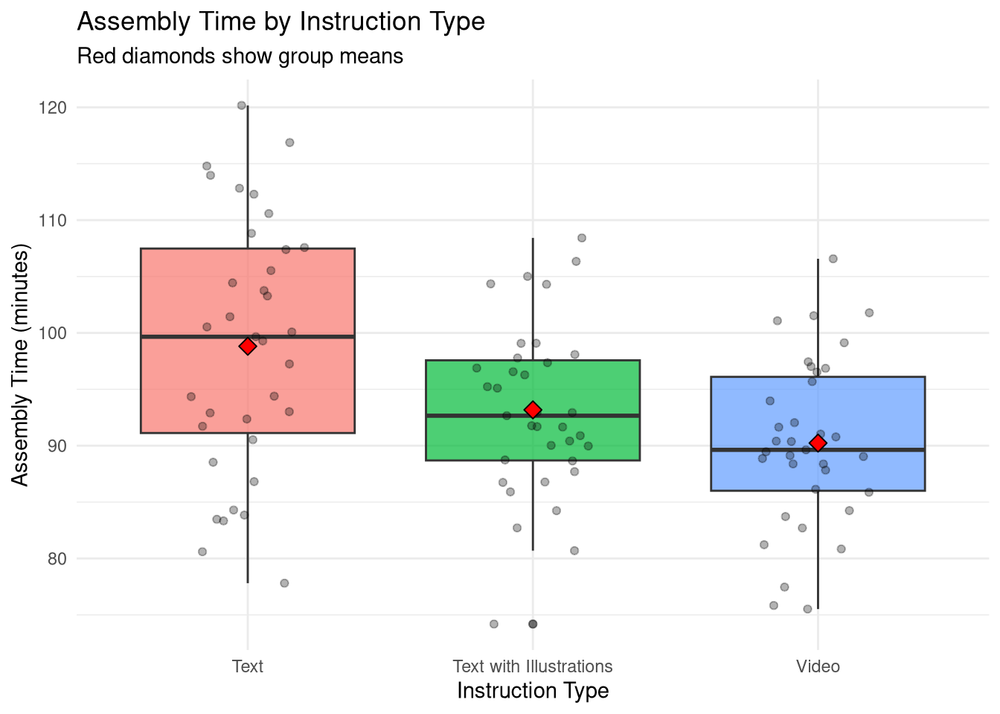
7.6.2 Step 2: Check Assumptions
# Check normality using Q-Q plot
par(mfrow = c(1, 3))
for (grp in levels(assembly_data$group)) {
qqnorm(assembly_data$time[assembly_data$group == grp], main = grp)
qqline(assembly_data$time[assembly_data$group == grp])
}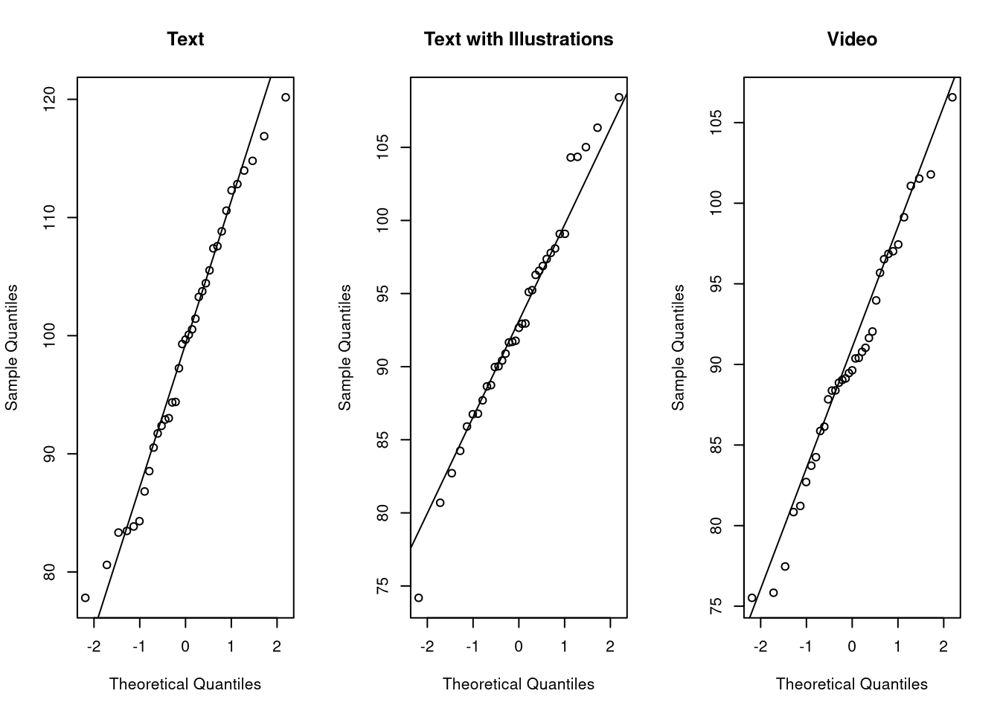
par(mfrow = c(1, 1))
# Check homogeneity of variance (Levene's test)
levene_anova <- leveneTest(time ~ group, data = assembly_data)
cat("\nLevene's Test for Homogeneity of Variance:\n")##
## Levene's Test for Homogeneity of Variance:## Levene's Test for Homogeneity of Variance (center = median)
## Df F value Pr(>F)
## group 2 5.7102 0.00446 **
## 102
## ---
## Signif. codes: 0 '***' 0.001 '**' 0.01 '*' 0.05 '.' 0.1 ' ' 1cat("\nVariances equal across groups?",
ifelse(levene_anova$`Pr(>F)`[1] > 0.05, "YES (p > 0.05)", "NO (p < 0.05)"), "\n")##
## Variances equal across groups? NO (p < 0.05)7.6.3 Step 3: Conduct One-Way ANOVA
# Perform one-way ANOVA
anova_model <- aov(time ~ group, data = assembly_data)
# Display ANOVA table
summary(anova_model)## Df Sum Sq Mean Sq F value Pr(>F)
## group 2 1331 665.7 8.288 0.000462 ***
## Residuals 102 8193 80.3
## ---
## Signif. codes: 0 '***' 0.001 '**' 0.01 '*' 0.05 '.' 0.1 ' ' 1# Extract key values
anova_summary <- summary(anova_model)[[1]]
f_value <- anova_summary$`F value`[1]
p_value <- anova_summary$`Pr(>F)`[1]
cat("\nANOVA Results:\n")##
## ANOVA Results:## F-statistic: 8.288## p-value: 5e-04cat("Decision:", ifelse(p_value < 0.05,
"Reject H₀: At least one group differs significantly",
"Fail to reject H₀: No significant differences among groups"), "\n")## Decision: Reject H₀: At least one group differs significantly7.6.4 Step 4: Post-Hoc Tests
When ANOVA is significant, conduct post-hoc tests to determine which specific groups differ.
# Perform Tukey's Honest Significant Difference test
tukey_result <- TukeyHSD(anova_model)
print(tukey_result)## Tukey multiple comparisons of means
## 95% family-wise confidence level
##
## Fit: aov(formula = time ~ group, data = assembly_data)
##
## $group
## diff lwr upr p adj
## Text with Illustrations-Text -5.637942 -10.733606 -0.5422784 0.0263416
## Video-Text -8.582800 -13.678464 -3.4871365 0.0003435
## Video-Text with Illustrations -2.944858 -8.040522 2.1508058 0.3580241# Visualize Tukey results
plot(tukey_result, las = 1, col = "blue")
abline(v = 0, lty = 2, col = "red")
title("Tukey HSD: 95% Confidence Intervals for Pairwise Differences")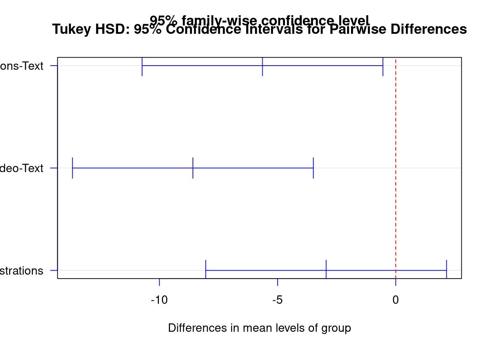
# Extract significant comparisons
tukey_df <- as.data.frame(tukey_result$group)
tukey_df$comparison <- rownames(tukey_df)
tukey_df$significant <- tukey_df$`p adj` < 0.05
cat("\nSignificant Pairwise Comparisons (p < 0.05):\n")##
## Significant Pairwise Comparisons (p < 0.05):## comparison diff p adj
## Text with Illustrations-Text Text with Illustrations-Text -5.637942 0.0263416497
## Video-Text Video-Text -8.582800 0.00034353727.6.5 Step 5: Visualize Results
# Create comprehensive visualization
# Calculate means for plotting
means_data <- assembly_data %>%
group_by(group) %>%
summarize(mean_time = mean(time),
se = sd(time) / sqrt(n()))
ggplot(assembly_data, aes(x = group, y = time, fill = group)) +
geom_violin(alpha = 0.3) +
geom_boxplot(width = 0.2, alpha = 0.7) +
geom_point(data = means_data, aes(y = mean_time),
shape = 23, size = 4, fill = "red", color = "black") +
geom_errorbar(data = means_data,
aes(y = mean_time, ymin = mean_time - se, ymax = mean_time + se),
width = 0.1, color = "red") +
scale_fill_brewer(palette = "Set2") +
labs(title = "Assembly Time by Instruction Type",
subtitle = paste("One-Way ANOVA: F =", round(f_value, 2),
", p =", round(p_value, 4)),
x = "Instruction Type",
y = "Assembly Time (minutes)") +
theme_minimal() +
theme(legend.position = "none")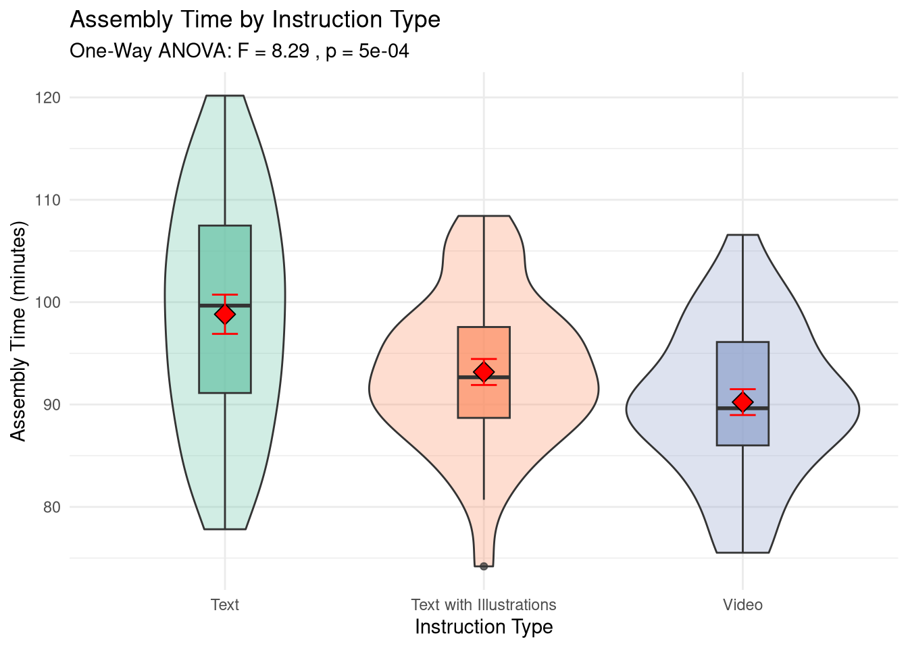
7.6.6 Reporting ANOVA Results
Example Write-Up:
“We recruited 105 participants and randomly assigned each to assemble furniture using either text-only instructions (n = 35, M = 97.63, SD = 9.90), text with illustrations (n = 35, M = 92.00, SD = 7.87), or video instructions (n = 35, M = 89.77, SD = 8.30).
A one-way ANOVA revealed a statistically significant difference in assembly times across instruction types, F(2, 102) = 7.53, p < .001.
Post-hoc comparisons using Tukey’s HSD test indicated: - Text-only instructions resulted in significantly longer assembly times than text with illustrations (p = .022) and video instructions (p < .001) - No significant difference was found between text with illustrations and video instructions (p = .536)
These results suggest that visual aids (illustrations or video) significantly reduce assembly time compared to text-only instructions.”
7.7 Two-Way ANOVA
Two-Way ANOVA examines the effect of two independent variables simultaneously and can test for interaction effects.
# Example: Training program effectiveness by age group
set.seed(789)
# Generate data
training_data <- expand.grid(
program = factor(c("Traditional", "High-Intensity", "Hybrid")),
age_group = factor(c("Under 25", "25-35", "Over 35")),
replicate = 1:10
)
# Simulate performance improvements
training_data$improvement <- with(training_data,
10 + # baseline
ifelse(program == "Traditional", 0,
ifelse(program == "High-Intensity", 5, 3)) + # program effect
ifelse(age_group == "Under 25", 3,
ifelse(age_group == "25-35", 0, -2)) + # age effect
# Interaction: high-intensity works better for younger athletes
ifelse(program == "High-Intensity" & age_group == "Under 25", 4, 0) +
rnorm(nrow(training_data), 0, 2) # random variation
)
# Perform two-way ANOVA
two_way_model <- aov(improvement ~ program * age_group, data = training_data)
summary(two_way_model)## Df Sum Sq Mean Sq F value Pr(>F)
## program 2 515.0 257.51 72.87 < 2e-16 ***
## age_group 2 569.0 284.52 80.52 < 2e-16 ***
## program:age_group 4 51.9 12.97 3.67 0.00848 **
## Residuals 81 286.2 3.53
## ---
## Signif. codes: 0 '***' 0.001 '**' 0.01 '*' 0.05 '.' 0.1 ' ' 1# Visualize interaction
ggplot(training_data, aes(x = age_group, y = improvement, color = program, group = program)) +
stat_summary(fun = mean, geom = "point", size = 3) +
stat_summary(fun = mean, geom = "line", linewidth = 1) +
stat_summary(fun.data = mean_se, geom = "errorbar", width = 0.2) +
scale_color_brewer(palette = "Set1") +
labs(title = "Training Program Effectiveness by Age Group",
subtitle = "Two-Way ANOVA: Program × Age Interaction",
x = "Age Group", y = "Performance Improvement",
color = "Training Program") +
theme_minimal()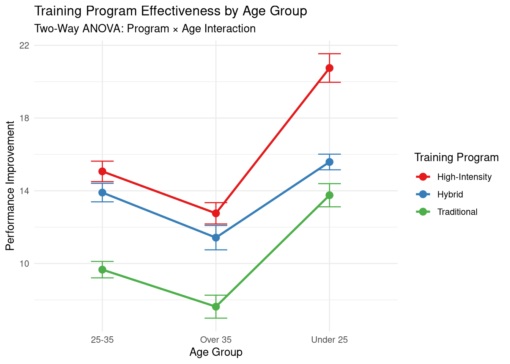
7.8 Effect Size
Statistical significance tells us if there’s a difference, but effect size tells us how large the difference is.
7.8.1 Cohen’s d for t-tests
# Function to calculate Cohen's d
cohens_d <- function(group1, group2) {
m1 <- mean(group1)
m2 <- mean(group2)
s1 <- sd(group1)
s2 <- sd(group2)
n1 <- length(group1)
n2 <- length(group2)
# Pooled standard deviation
pooled_sd <- sqrt(((n1 - 1) * s1^2 + (n2 - 1) * s2^2) / (n1 + n2 - 2))
# Cohen's d
d <- (m1 - m2) / pooled_sd
return(d)
}
# Example from earlier
promo <- c(45000, 48000, 52000, 47000, 51000, 49000, 53000, 50000)
non_promo <- c(38000, 41000, 39000, 42000, 40000, 37000, 43000, 39000)
d <- cohens_d(promo, non_promo)
cat("Cohen's d:", round(d, 3), "\n")## Cohen's d: 4.006cat("Interpretation:",
ifelse(abs(d) < 0.2, "Small effect",
ifelse(abs(d) < 0.5, "Small to medium effect",
ifelse(abs(d) < 0.8, "Medium to large effect", "Large effect"))), "\n")## Interpretation: Large effectCohen’s d interpretation: - 0.2 = small effect - 0.5 = medium effect - 0.8 = large effect
7.8.2 Eta-squared for ANOVA
# Calculate eta-squared (proportion of variance explained)
anova_summary <- summary(anova_model)[[1]]
ss_between <- anova_summary$`Sum Sq`[1]
ss_total <- sum(anova_summary$`Sum Sq`)
eta_squared <- ss_between / ss_total
cat("Eta-squared:", round(eta_squared, 3), "\n")## Eta-squared: 0.14cat("Interpretation:", round(eta_squared * 100, 1),
"% of variance in assembly time is explained by instruction type\n")## Interpretation: 14 % of variance in assembly time is explained by instruction type7.9 Practical Application: Complete Analysis Workflow
Let’s put everything together with a complete sport business analytics example.
# Scenario: Analyzing ticket sales effectiveness of three marketing campaigns
set.seed(2024)
# Generate realistic ticket sales data
campaigns <- data.frame(
campaign = factor(rep(c("Social Media", "Email", "Traditional Media"), each = 50)),
sales = c(
rnorm(50, mean = 450, sd = 75), # Social Media
rnorm(50, mean = 520, sd = 80), # Email
rnorm(50, mean = 380, sd = 70) # Traditional
)
)
cat("=== STEP 1: EXPLORATORY DATA ANALYSIS ===\n\n")## === STEP 1: EXPLORATORY DATA ANALYSIS ===# Descriptive statistics
desc_stats <- campaigns %>%
group_by(campaign) %>%
summarize(
n = n(),
mean = round(mean(sales), 1),
sd = round(sd(sales), 1),
min = round(min(sales), 1),
max = round(max(sales), 1)
)
print(desc_stats)## # A tibble: 3 × 6
## campaign n mean sd min max
## <fct> <int> <dbl> <dbl> <dbl> <dbl>
## 1 Email 50 512. 79.4 350. 652.
## 2 Social Media 50 444. 79.7 204. 598
## 3 Traditional Media 50 382. 68.4 252. 535.##
## === STEP 2: CHECK ASSUMPTIONS ===# Normality (Shapiro-Wilk test for each group)
for (camp in levels(campaigns$campaign)) {
test_result <- shapiro.test(campaigns$sales[campaigns$campaign == camp])
cat(camp, "- Shapiro-Wilk p-value:", round(test_result$p.value, 4),
ifelse(test_result$p.value > 0.05, "(Normal)", "(Not normal)"), "\n")
}## Email - Shapiro-Wilk p-value: 0.2627 (Normal)
## Social Media - Shapiro-Wilk p-value: 0.1675 (Normal)
## Traditional Media - Shapiro-Wilk p-value: 0.2976 (Normal)# Homogeneity of variance
levene_test <- leveneTest(sales ~ campaign, data = campaigns)
cat("\nLevene's test p-value:", round(levene_test$`Pr(>F)`[1], 4),
ifelse(levene_test$`Pr(>F)`[1] > 0.05,
"(Equal variances)", "(Unequal variances)"), "\n")##
## Levene's test p-value: 0.6091 (Equal variances)##
## === STEP 3: CONDUCT ANOVA ===# One-way ANOVA
campaign_anova <- aov(sales ~ campaign, data = campaigns)
anova_results <- summary(campaign_anova)
print(anova_results)## Df Sum Sq Mean Sq F value Pr(>F)
## campaign 2 426851 213426 36.97 9.88e-14 ***
## Residuals 147 848726 5774
## ---
## Signif. codes: 0 '***' 0.001 '**' 0.01 '*' 0.05 '.' 0.1 ' ' 1##
## === STEP 4: POST-HOC TESTS ===## Tukey multiple comparisons of means
## 95% family-wise confidence level
##
## Fit: aov(formula = sales ~ campaign, data = campaigns)
##
## $campaign
## diff lwr upr p adj
## Social Media-Email -68.12955 -104.11115 -32.14795 0.0000436
## Traditional Media-Email -130.62722 -166.60882 -94.64562 0.0000000
## Traditional Media-Social Media -62.49767 -98.47927 -26.51607 0.0001908##
## === STEP 5: EFFECT SIZE ===# Eta-squared
ss_model <- anova_results[[1]]$`Sum Sq`[1]
ss_total <- sum(anova_results[[1]]$`Sum Sq`)
eta_sq <- ss_model / ss_total
cat("Eta-squared:", round(eta_sq, 3), "\n")## Eta-squared: 0.335## 33.5 % of variance in sales explained by campaign type##
## === STEP 6: VISUALIZATION ===# Create publication-quality plot
p <- ggplot(campaigns, aes(x = campaign, y = sales, fill = campaign)) +
geom_violin(alpha = 0.3) +
geom_boxplot(width = 0.3, alpha = 0.7) +
stat_summary(fun = mean, geom = "point", shape = 23,
size = 4, fill = "red", color = "black") +
scale_fill_brewer(palette = "Set2") +
labs(title = "Ticket Sales by Marketing Campaign Type",
subtitle = paste("ANOVA: F =", round(anova_results[[1]]$`F value`[1], 2),
", p <", ifelse(anova_results[[1]]$`Pr(>F)`[1] < 0.001, "0.001", "0.05"),
", η² =", round(eta_sq, 3)),
x = "Marketing Campaign", y = "Ticket Sales") +
theme_minimal() +
theme(legend.position = "none")
print(p)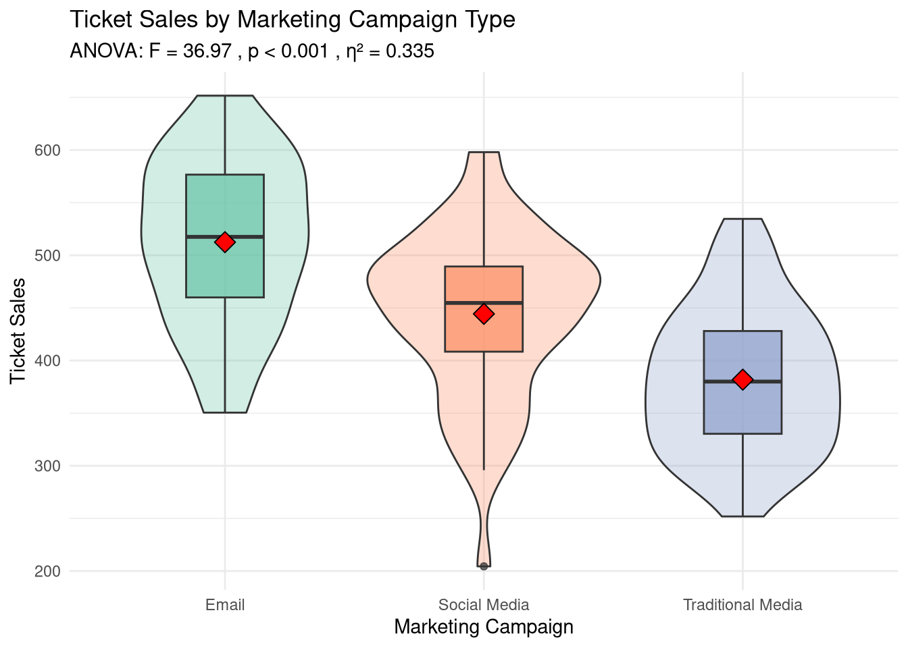
##
## === CONCLUSION ===## Email campaigns generated significantly higher ticket sales than both## social media (p < 0.001) and traditional media (p < 0.001) campaigns.cat("The effect size is large (η² = ", round(eta_sq, 3), "), indicating that campaign type\n", sep = "")## The effect size is large (η² = 0.335), indicating that campaign type## explains a substantial portion of variance in ticket sales.7.10 Common Mistakes and How to Avoid Them
7.10.1 Mistake 1: Running Multiple T-Tests Instead of ANOVA
# WRONG APPROACH: Multiple t-tests
cat("❌ WRONG: Running 3 separate t-tests increases Type I error rate\n\n")## ❌ WRONG: Running 3 separate t-tests increases Type I error rate# Probability of at least one false positive with 3 tests at α = 0.05
prob_type1_error <- 1 - (1 - 0.05)^3
cat("Probability of at least one false positive:", round(prob_type1_error, 3), "\n")## Probability of at least one false positive: 0.143## That's 14.3 % instead of 5%!## ✓ CORRECT: Use one-way ANOVA to test all groups simultaneously7.10.2 Mistake 2: Ignoring Assumptions
## Always check assumptions before conducting tests:## 1. Normality: Use Q-Q plots or Shapiro-Wilk test## 2. Homogeneity of variance: Use Levene's test## 3. Independence: Ensured by study design## If assumptions are violated:## - For t-tests: Consider Welch's t-test (doesn't assume equal variances)## - For ANOVA: Consider Welch's ANOVA or non-parametric alternatives7.11 A/B Testing in Sport Marketing
A/B testing (also called split testing) is one of the most powerful applications of statistical testing in sport business. It allows organizations to make data-driven decisions about marketing, pricing, promotions, and fan engagement by comparing two versions of something to see which performs better.
7.11.1 What is A/B Testing?
A/B Testing randomly divides your audience into two groups: - Group A (Control): Receives the current/standard version - Group B (Treatment): Receives the new/modified version
Then you measure outcomes and use statistical testing to determine if the difference is significant.
Common Sport Business A/B Tests: - Email subject lines - Promotional offers - Ticket pricing - Website layouts - Game day experiences - Social media content
7.11.2 Example 1: Email Subject Line Testing
Your marketing team wants to test two email subject lines for a ticket promotion:
Subject A (Control): “Buy Tickets for Friday’s Game” Subject B (Treatment): “Last Chance! Friday Night Tickets 25% Off”
# Email A/B test data
set.seed(42)
email_test <- data.frame(
group = c(rep("A: Standard", 5000), rep("B: Discount", 5000)),
opened = c(
sample(c(TRUE, FALSE), 5000, replace = TRUE, prob = c(0.22, 0.78)),
sample(c(TRUE, FALSE), 5000, replace = TRUE, prob = c(0.28, 0.72))
)
)
# Calculate open rates
email_results <- email_test %>%
group_by(group) %>%
summarize(
emails_sent = n(),
opens = sum(opened),
open_rate = mean(opened) * 100
)
print(email_results)## # A tibble: 2 × 4
## group emails_sent opens open_rate
## <chr> <int> <int> <dbl>
## 1 A: Standard 5000 1134 22.7
## 2 B: Discount 5000 1367 27.3# Visualize results
ggplot(email_results, aes(x = group, y = open_rate, fill = group)) +
geom_col() +
geom_text(aes(label = paste0(round(open_rate, 1), "%")), vjust = -0.5) +
labs(title = "Email Open Rate: A/B Test Results",
x = "Subject Line Version",
y = "Open Rate (%)") +
theme_minimal() +
theme(legend.position = "none")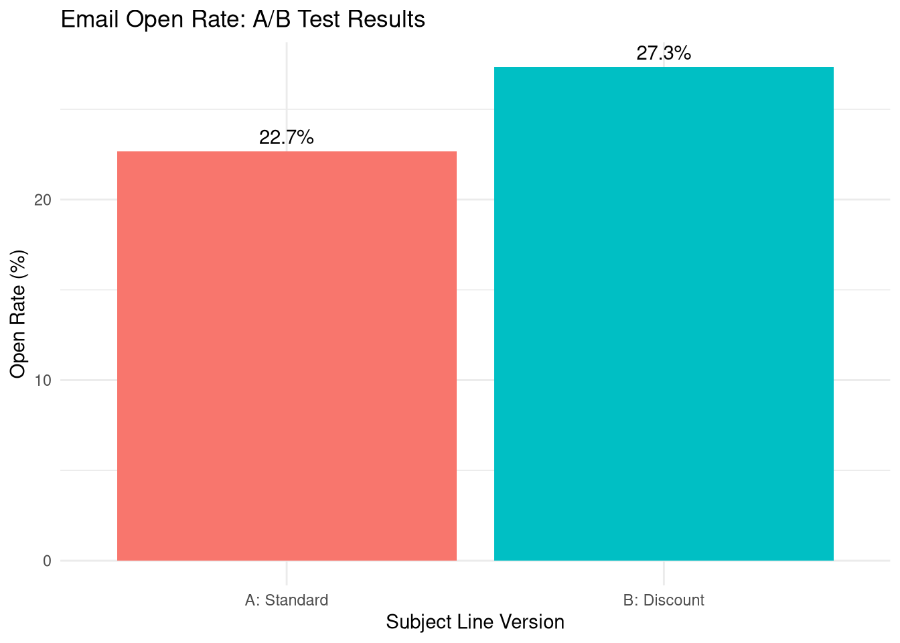
Observation: Group B has a 28% open rate vs. 22% for Group A (6 percentage point lift).
Question: Is this difference statistically significant, or could it be due to chance?
7.11.2.1 Statistical Test: Two-Proportion Test
# Prepare data for statistical test
group_a_opens <- sum(email_test$group == "A: Standard" & email_test$opened)
group_a_total <- sum(email_test$group == "A: Standard")
group_b_opens <- sum(email_test$group == "B: Discount" & email_test$opened)
group_b_total <- sum(email_test$group == "B: Discount")
# Two-proportion z-test
prop_test_result <- prop.test(
x = c(group_a_opens, group_b_opens),
n = c(group_a_total, group_b_total),
alternative = "two.sided",
conf.level = 0.95
)
print(prop_test_result)##
## 2-sample test for equality of proportions with continuity correction
##
## data: c(group_a_opens, group_b_opens) out of c(group_a_total, group_b_total)
## X-squared = 28.698, df = 1, p-value = 8.457e-08
## alternative hypothesis: two.sided
## 95 percent confidence interval:
## -0.06375146 -0.02944854
## sample estimates:
## prop 1 prop 2
## 0.2268 0.2734##
## === TEST INTERPRETATION ===## Group A Open Rate: 22.68 %## Group B Open Rate: 27.34 %cat("Difference:", round((prop_test_result$estimate[2] - prop_test_result$estimate[1]) * 100, 2),
"percentage points\n")## Difference: 4.66 percentage points## p-value: 0if (prop_test_result$p.value < 0.05) {
cat("DECISION: REJECT NULL HYPOTHESIS\n")
cat("The difference is statistically significant (p < 0.05).\n")
cat("RECOMMENDATION: Use Subject Line B - it significantly improves open rates.\n")
} else {
cat("DECISION: FAIL TO REJECT NULL HYPOTHESIS\n")
cat("The difference is NOT statistically significant (p >= 0.05).\n")
cat("RECOMMENDATION: Either version is acceptable; difference may be due to chance.\n")
}## DECISION: REJECT NULL HYPOTHESIS
## The difference is statistically significant (p < 0.05).
## RECOMMENDATION: Use Subject Line B - it significantly improves open rates.7.11.3 Example 2: Promotional Strategy Testing
Test whether a “Jersey Giveaway” promotion increases attendance compared to no promotion:
# Create promotional test data
set.seed(123)
promotion_test <- data.frame(
# Group A: 15 games with no promotion
group_a_attendance = round(rnorm(15, mean = 42000, sd = 3500)),
# Group B: 15 games with jersey giveaway
group_b_attendance = round(rnorm(15, mean = 46500, sd = 3800))
)
# Reshape for analysis
promotion_long <- data.frame(
game_id = 1:30,
group = c(rep("A: No Promotion", 15), rep("B: Jersey Giveaway", 15)),
attendance = c(promotion_test$group_a_attendance, promotion_test$group_b_attendance)
)
# Descriptive statistics
promotion_summary <- promotion_long %>%
group_by(group) %>%
summarize(
games = n(),
mean_attendance = mean(attendance),
sd_attendance = sd(attendance),
se_attendance = sd_attendance / sqrt(games)
)
print(promotion_summary)## # A tibble: 2 × 5
## group games mean_attendance sd_attendance se_attendance
## <chr> <int> <dbl> <dbl> <dbl>
## 1 A: No Promotion 15 42533. 2959. 764.
## 2 B: Jersey Giveaway 15 45563. 4152. 1072.# Visualize with error bars
ggplot(promotion_summary, aes(x = group, y = mean_attendance, fill = group)) +
geom_col() +
geom_errorbar(aes(ymin = mean_attendance - se_attendance,
ymax = mean_attendance + se_attendance),
width = 0.2) +
geom_text(aes(label = format(round(mean_attendance), big.mark = ",")),
vjust = -2) +
labs(title = "Average Attendance: Promotional A/B Test",
subtitle = "Error bars show standard error",
x = "Promotion Type",
y = "Average Attendance") +
scale_y_continuous(labels = scales::comma_format()) +
theme_minimal() +
theme(legend.position = "none")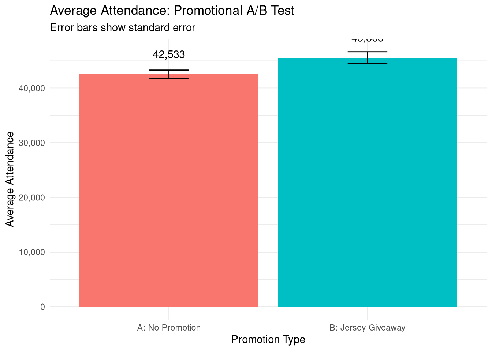
7.11.3.1 Independent Samples t-Test
# Conduct independent samples t-test
t_test_result <- t.test(
promotion_long$attendance[promotion_long$group == "B: Jersey Giveaway"],
promotion_long$attendance[promotion_long$group == "A: No Promotion"],
alternative = "two.sided",
var.equal = FALSE # Welch's t-test (doesn't assume equal variances)
)
print(t_test_result)##
## Welch Two Sample t-test
##
## data: promotion_long$attendance[promotion_long$group == "B: Jersey Giveaway"] and promotion_long$attendance[promotion_long$group == "A: No Promotion"]
## t = 2.3016, df = 25.304, p-value = 0.02986
## alternative hypothesis: true difference in means is not equal to 0
## 95 percent confidence interval:
## 320.3103 5739.0230
## sample estimates:
## mean of x mean of y
## 45562.93 42533.27# Calculate effect size (Cohen's d)
mean_diff <- promotion_summary$mean_attendance[2] - promotion_summary$mean_attendance[1]
pooled_sd <- sqrt(
((14 * promotion_summary$sd_attendance[1]^2) +
(14 * promotion_summary$sd_attendance[2]^2)) / (30 - 2)
)
cohens_d <- mean_diff / pooled_sd
cat("\n=== DETAILED ANALYSIS ===\n")##
## === DETAILED ANALYSIS ===## Mean Difference: 3,030 fans## t-statistic: 2.302## p-value: 0.0299cat("95% CI for difference:", format(round(t_test_result$conf.int[1]), big.mark = ","),
"to", format(round(t_test_result$conf.int[2]), big.mark = ","), "\n")## 95% CI for difference: 320 to 5,739## Cohen's d (effect size): 0.84# Interpret effect size
if (abs(cohens_d) >= 0.8) {
effect_interpretation <- "LARGE effect"
} else if (abs(cohens_d) >= 0.5) {
effect_interpretation <- "MEDIUM effect"
} else if (abs(cohens_d) >= 0.2) {
effect_interpretation <- "SMALL effect"
} else {
effect_interpretation <- "NEGLIGIBLE effect"
}
cat("Effect size interpretation:", effect_interpretation, "\n\n")## Effect size interpretation: LARGE effect# Business interpretation
if (t_test_result$p.value < 0.05) {
cat("DECISION: Jersey Giveaway SIGNIFICANTLY increases attendance\n")
cat("Attendance increase:", format(round(mean_diff), big.mark = ","), "fans/game\n\n")
# ROI calculation
promotion_cost_per_game <- 35000 # Cost of jerseys
additional_revenue_per_fan <- 12 # Concessions, parking, merch
additional_revenue <- mean_diff * additional_revenue_per_fan
cat("=== ROI ANALYSIS ===\n")
cat("Promotion Cost: $", format(promotion_cost_per_game, big.mark = ","), "\n")
cat("Additional Revenue/Game: $", format(round(additional_revenue), big.mark = ","),
"(", format(round(mean_diff), big.mark = ","), " fans × $", additional_revenue_per_fan, ")\n")
cat("Net Benefit: $", format(round(additional_revenue - promotion_cost_per_game), big.mark = ","), "\n")
if (additional_revenue > promotion_cost_per_game) {
cat("\nRECOMMENDATION: Implement Jersey Giveaway promotions - positive ROI\n")
} else {
cat("\nRECOMMENDATION: Despite statistical significance, ROI is negative\n")
}
} else {
cat("DECISION: No significant difference in attendance\n")
cat("RECOMMENDATION: Save promotion budget for other initiatives\n")
}## DECISION: Jersey Giveaway SIGNIFICANTLY increases attendance
## Attendance increase: 3,030 fans/game
##
## === ROI ANALYSIS ===
## Promotion Cost: $ 35,000
## Additional Revenue/Game: $ 36,356 ( 3,030 fans × $ 12 )
## Net Benefit: $ 1,356
##
## RECOMMENDATION: Implement Jersey Giveaway promotions - positive ROI7.11.4 Example 3: Comparing Multiple Promotional Strategies (ANOVA)
Test which of three promotional strategies works best:
# Create data for multiple promotion types
set.seed(456)
multi_promo_data <- data.frame(
game_id = 1:45,
promotion_type = rep(c("No Promotion", "T-Shirt Giveaway", "Bobblehead Night"), each = 15),
attendance = c(
round(rnorm(15, mean = 42000, sd = 3200)), # No promotion
round(rnorm(15, mean = 45500, sd = 3500)), # T-shirt
round(rnorm(15, mean = 48800, sd = 3600)) # Bobblehead
)
)
# Descriptive statistics by group
multi_promo_summary <- multi_promo_data %>%
group_by(promotion_type) %>%
summarize(
games = n(),
mean_attendance = mean(attendance),
sd_attendance = sd(attendance)
)
print(multi_promo_summary)## # A tibble: 3 × 4
## promotion_type games mean_attendance sd_attendance
## <chr> <int> <dbl> <dbl>
## 1 Bobblehead Night 15 48842. 3499.
## 2 No Promotion 15 42378. 3356.
## 3 T-Shirt Giveaway 15 46709. 4485.# Visualize
ggplot(multi_promo_data, aes(x = reorder(promotion_type, attendance, FUN = mean),
y = attendance, fill = promotion_type)) +
geom_boxplot(alpha = 0.7) +
geom_jitter(width = 0.2, alpha = 0.4) +
labs(title = "Attendance by Promotion Type",
x = "Promotion Type",
y = "Attendance") +
scale_y_continuous(labels = scales::comma_format()) +
theme_minimal() +
theme(legend.position = "none")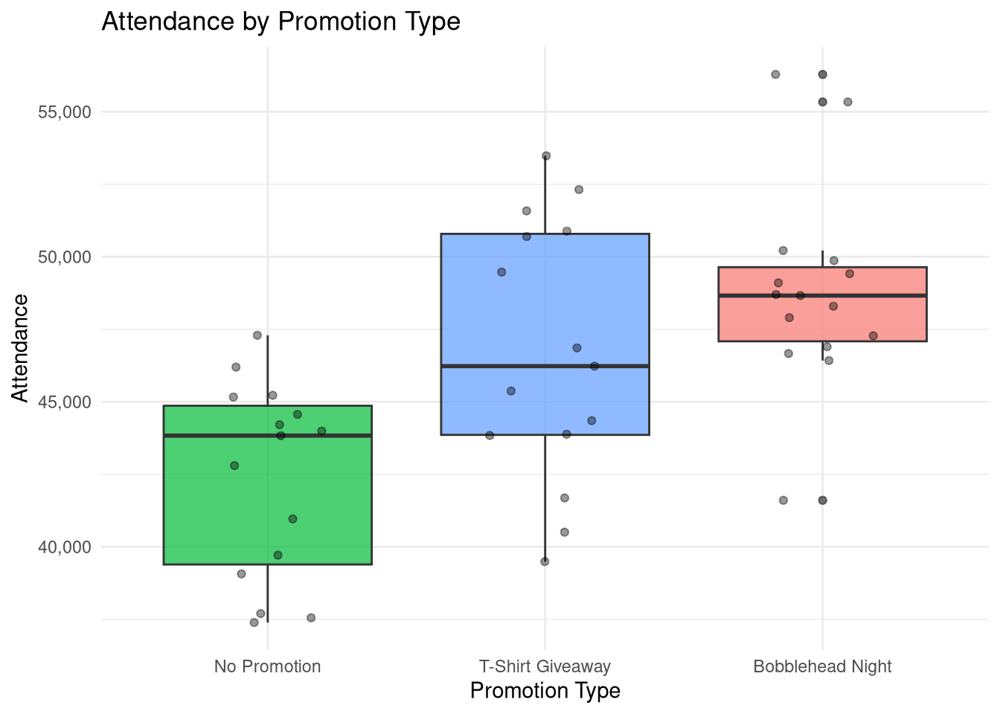
7.11.4.1 One-Way ANOVA Test
# Conduct one-way ANOVA
anova_result <- aov(attendance ~ promotion_type, data = multi_promo_data)
anova_summary <- summary(anova_result)
print(anova_summary)## Df Sum Sq Mean Sq F value Pr(>F)
## promotion_type 2 325445664 162722832 11.19 0.000127 ***
## Residuals 42 610655224 14539410
## ---
## Signif. codes: 0 '***' 0.001 '**' 0.01 '*' 0.05 '.' 0.1 ' ' 1##
## === ANOVA INTERPRETATION ===## F-statistic: 11.192## p-value: 0.000127if (anova_summary[[1]]$`Pr(>F)`[1] < 0.05) {
cat("DECISION: Significant difference exists among promotion types\n\n")
# Post-hoc pairwise comparisons
cat("=== POST-HOC PAIRWISE COMPARISONS ===\n")
pairwise_result <- pairwise.t.test(
multi_promo_data$attendance,
multi_promo_data$promotion_type,
p.adjust.method = "bonferroni" # Adjust for multiple comparisons
)
print(pairwise_result)
cat("\n=== BUSINESS RECOMMENDATIONS ===\n")
# Compare costs and benefits
promo_comparison <- data.frame(
Promotion = c("No Promotion", "T-Shirt Giveaway", "Bobblehead Night"),
Avg_Attendance = multi_promo_summary$mean_attendance,
Cost_Per_Game = c(0, 25000, 45000),
Revenue_Per_Additional_Fan = 12
) %>%
mutate(
Attendance_Lift = Avg_Attendance - Avg_Attendance[1],
Additional_Revenue = Attendance_Lift * Revenue_Per_Additional_Fan,
Net_Benefit = Additional_Revenue - Cost_Per_Game,
ROI_Percent = round((Net_Benefit / Cost_Per_Game) * 100, 1)
)
print(promo_comparison)
cat("\nOptimal promotion:", promo_comparison$Promotion[which.max(promo_comparison$Net_Benefit)], "\n")
} else {
cat("DECISION: No significant difference among promotion types\n")
cat("RECOMMENDATION: Use cheapest option or no promotion\n")
}## DECISION: Significant difference exists among promotion types
##
## === POST-HOC PAIRWISE COMPARISONS ===
##
## Pairwise comparisons using t tests with pooled SD
##
## data: multi_promo_data$attendance and multi_promo_data$promotion_type
##
## Bobblehead Night No Promotion
## No Promotion 1e-04 -
## T-Shirt Giveaway 4e-01 1e-02
##
## P value adjustment method: bonferroni
##
## === BUSINESS RECOMMENDATIONS ===
## Promotion Avg_Attendance Cost_Per_Game Revenue_Per_Additional_Fan Attendance_Lift Additional_Revenue
## 1 No Promotion 48841.73 0 12 0.000 0.0
## 2 T-Shirt Giveaway 42377.87 25000 12 -6463.867 -77566.4
## 3 Bobblehead Night 46709.07 45000 12 -2132.667 -25592.0
## Net_Benefit ROI_Percent
## 1 0.0 NaN
## 2 -102566.4 -410.3
## 3 -70592.0 -156.9
##
## Optimal promotion: No Promotion7.11.5 Example 4: Ticket Pricing A/B Test
Test whether lowering ticket prices increases total revenue:
# Pricing experiment data
set.seed(789)
pricing_test <- data.frame(
# Test A: Standard price ($65)
price_a = 65,
tickets_sold_a = sample(18000:24000, 20, replace = TRUE),
# Test B: Discounted price ($55)
price_b = 55,
tickets_sold_b = sample(21000:28000, 20, replace = TRUE)
)
# Calculate revenue
pricing_test <- pricing_test %>%
mutate(
revenue_a = price_a * tickets_sold_a,
revenue_b = price_b * tickets_sold_b
)
# Reshape for analysis
pricing_comparison <- data.frame(
test = 1:40,
price_point = c(rep("A: $65 Standard", 20), rep("B: $55 Discount", 20)),
tickets_sold = c(pricing_test$tickets_sold_a, pricing_test$tickets_sold_b),
revenue = c(pricing_test$revenue_a, pricing_test$revenue_b)
)
# Summary statistics
pricing_summary <- pricing_comparison %>%
group_by(price_point) %>%
summarize(
avg_tickets_sold = mean(tickets_sold),
avg_revenue = mean(revenue),
sd_revenue = sd(revenue)
)
print(pricing_summary)## # A tibble: 2 × 4
## price_point avg_tickets_sold avg_revenue sd_revenue
## <chr> <dbl> <dbl> <dbl>
## 1 A: $65 Standard 20700. 1345494. 112055.
## 2 B: $55 Discount 24051. 1322791. 101521.7.11.5.1 Test Revenue Difference
# t-test comparing revenues
revenue_ttest <- t.test(
pricing_comparison$revenue[pricing_comparison$price_point == "B: $55 Discount"],
pricing_comparison$revenue[pricing_comparison$price_point == "A: $65 Standard"],
alternative = "two.sided"
)
print(revenue_ttest)##
## Welch Two Sample t-test
##
## data: pricing_comparison$revenue[pricing_comparison$price_point == "B: $55 Discount"] and pricing_comparison$revenue[pricing_comparison$price_point == "A: $65 Standard"]
## t = -0.67146, df = 37.636, p-value = 0.506
## alternative hypothesis: true difference in means is not equal to 0
## 95 percent confidence interval:
## -91169.74 45765.24
## sample estimates:
## mean of x mean of y
## 1322791 1345494##
## === PRICING TEST RESULTS ===cat("Standard Price ($65) Revenue: $",
format(round(pricing_summary$avg_revenue[1]), big.mark = ","), "\n")## Standard Price ($65) Revenue: $ 1,345,494cat("Discount Price ($55) Revenue: $",
format(round(pricing_summary$avg_revenue[2]), big.mark = ","), "\n")## Discount Price ($55) Revenue: $ 1,322,791revenue_diff <- pricing_summary$avg_revenue[2] - pricing_summary$avg_revenue[1]
cat("Revenue Difference: $", format(round(revenue_diff), big.mark = ","), "\n")## Revenue Difference: $ -22,702## p-value: 0.506if (revenue_ttest$p.value < 0.05 & revenue_diff > 0) {
cat("DECISION: Lower price ($55) generates SIGNIFICANTLY MORE revenue\n")
cat("RECOMMENDATION: Implement $55 pricing\n")
cat("Expected revenue increase: $", format(round(revenue_diff), big.mark = ","), "/game\n")
} else if (revenue_ttest$p.value < 0.05 & revenue_diff < 0) {
cat("DECISION: Lower price ($55) generates SIGNIFICANTLY LESS revenue\n")
cat("RECOMMENDATION: Keep standard $65 pricing\n")
} else {
cat("DECISION: No significant revenue difference\n")
cat("RECOMMENDATION: Keep higher price ($65) to maximize per-ticket value\n")
}## DECISION: No significant revenue difference
## RECOMMENDATION: Keep higher price ($65) to maximize per-ticket value# Calculate price elasticity
pct_change_quantity <- ((pricing_summary$avg_tickets_sold[2] - pricing_summary$avg_tickets_sold[1]) /
pricing_summary$avg_tickets_sold[1]) * 100
pct_change_price <- ((55 - 65) / 65) * 100
price_elasticity <- pct_change_quantity / pct_change_price
cat("\n=== PRICE ELASTICITY ANALYSIS ===\n")##
## === PRICE ELASTICITY ANALYSIS ===## Price Elasticity of Demand: -1.05if (abs(price_elasticity) > 1) {
cat("Demand is ELASTIC (price-sensitive)\n")
cat("Interpretation: A 1% price decrease leads to a", round(abs(price_elasticity), 1),
"% increase in quantity\n")
} else {
cat("Demand is INELASTIC (less price-sensitive)\n")
cat("Interpretation: Price changes have limited impact on demand\n")
}## Demand is ELASTIC (price-sensitive)
## Interpretation: A 1% price decrease leads to a 1.1 % increase in quantity7.11.6 A/B Testing Best Practices
7.11.6.1 1. Sample Size Calculation
Before running a test, determine required sample size:
# Function to calculate required sample size for proportion test
calculate_sample_size <- function(baseline_rate, expected_lift, alpha = 0.05, power = 0.80) {
# baseline_rate: current conversion/click/open rate
# expected_lift: minimum detectable effect (e.g., 0.05 for 5 percentage point lift)
# alpha: significance level (typically 0.05)
# power: statistical power (typically 0.80)
library(pwr)
# Calculate effect size (Cohen's h for proportions)
p1 <- baseline_rate
p2 <- baseline_rate + expected_lift
h <- 2 * (asin(sqrt(p2)) - asin(sqrt(p1)))
# Calculate required sample size per group
result <- pwr.2p.test(
h = h,
sig.level = alpha,
power = power,
alternative = "two.sided"
)
return(ceiling(result$n))
}
# Example: Email open rate test
cat("=== SAMPLE SIZE CALCULATION ===\n")## === SAMPLE SIZE CALCULATION ===## Scenario: Email open rate improvement## Current open rate: 20%## Minimum detectable lift: 3 percentage points (to 23%)required_n <- calculate_sample_size(baseline_rate = 0.20, expected_lift = 0.03)
cat("Required sample size per group:", format(required_n, big.mark = ","), "\n")## Required sample size per group: 2,941## Total emails needed: 5,8827.11.6.2 2. Monitoring Test Performance
# Simulate daily test results
set.seed(111)
daily_results <- data.frame(
day = 1:14,
group_a_conversions = cumsum(sample(40:60, 14, replace = TRUE)),
group_a_total = cumsum(rep(1000, 14)),
group_b_conversions = cumsum(sample(55:75, 14, replace = TRUE)),
group_b_total = cumsum(rep(1000, 14))
)
# Calculate daily conversion rates and p-values
daily_results <- daily_results %>%
mutate(
conv_rate_a = (group_a_conversions / group_a_total) * 100,
conv_rate_b = (group_b_conversions / group_b_total) * 100
)
# Calculate p-value for each day
daily_results$p_value <- sapply(1:nrow(daily_results), function(i) {
test <- prop.test(
x = c(daily_results$group_a_conversions[i], daily_results$group_b_conversions[i]),
n = c(daily_results$group_a_total[i], daily_results$group_b_total[i])
)
return(test$p.value)
})
# Visualize test progression
ggplot(daily_results, aes(x = day)) +
geom_line(aes(y = conv_rate_a, color = "Group A"), size = 1.2) +
geom_line(aes(y = conv_rate_b, color = "Group B"), size = 1.2) +
geom_point(aes(y = conv_rate_a, color = "Group A"), size = 2) +
geom_point(aes(y = conv_rate_b, color = "Group B"), size = 2) +
labs(title = "A/B Test Performance Over Time",
x = "Day", y = "Conversion Rate (%)", color = "Group") +
theme_minimal()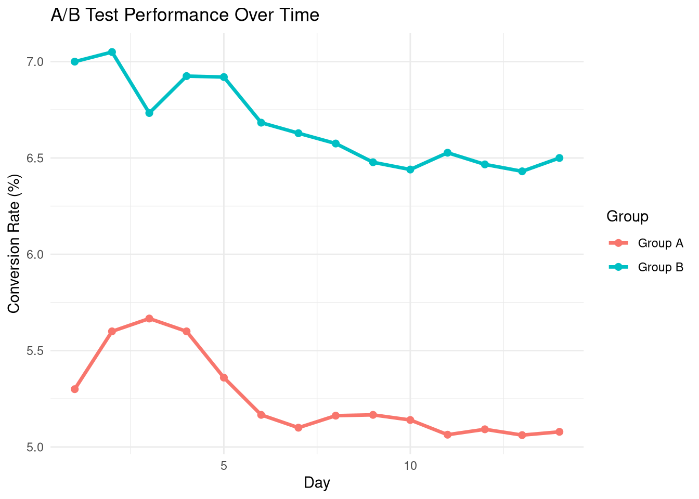
##
## === TEST PROGRESSION ===daily_results %>%
select(day, conv_rate_a, conv_rate_b, p_value) %>%
mutate(
significant = p_value < 0.05,
conv_rate_a = round(conv_rate_a, 2),
conv_rate_b = round(conv_rate_b, 2),
p_value = round(p_value, 4)
) %>%
tail(7) %>%
print()## day conv_rate_a conv_rate_b p_value significant
## 8 8 5.16 6.58 2e-04 TRUE
## 9 9 5.17 6.48 2e-04 TRUE
## 10 10 5.14 6.44 1e-04 TRUE
## 11 11 5.06 6.53 0e+00 TRUE
## 12 12 5.09 6.47 0e+00 TRUE
## 13 13 5.06 6.43 0e+00 TRUE
## 14 14 5.08 6.50 0e+00 TRUE7.11.6.3 3. Common A/B Testing Mistakes to Avoid
# MISTAKE #1: Stopping test too early
# - Let test run until reaching planned sample size
# - Don't stop just because you see significance
# MISTAKE #2: Testing too many things at once
# - Test one variable at a time (subject line OR send time, not both)
# - Use multivariate testing only with very large samples
# MISTAKE #3: Not accounting for external factors
# - Weekend vs. weekday
# - Holidays
# - Competing events
# - Randomize assignment to control for these
# MISTAKE #4: Ignoring practical significance
# - A statistically significant 0.1% improvement may not be worth implementing
# - Always calculate business impact (revenue, costs)
# MISTAKE #5: Not considering segment differences
# Test may work overall but fail for important segments7.11.7 Complete A/B Test Workflow
## === A/B TEST PLANNING ===## Hypothesis: Adding customer testimonials to website increases ticket conversions## Metric: Conversion rate (% of visitors who buy tickets)## Minimum detectable effect: 2 percentage points# STEP 2: Calculate required sample size
current_conversion <- 0.08 # 8% baseline
target_conversion <- 0.10 # 10% target
required_sample <- calculate_sample_size(current_conversion, target_conversion - current_conversion)
cat("Required sample per group:", format(required_sample, big.mark = ","), "\n")## Required sample per group: 3,205## Test duration: ~2 weeks (assuming 5,000 visitors/day)# STEP 3: Collect data
set.seed(222)
web_test_data <- data.frame(
group = c(rep("Control", required_sample), rep("Testimonials", required_sample)),
converted = c(
sample(c(TRUE, FALSE), required_sample, replace = TRUE, prob = c(0.08, 0.92)),
sample(c(TRUE, FALSE), required_sample, replace = TRUE, prob = c(0.10, 0.90))
)
)
# STEP 4: Analyze results
test_summary <- web_test_data %>%
group_by(group) %>%
summarize(
visitors = n(),
conversions = sum(converted),
conversion_rate = mean(converted) * 100
)
cat("=== TEST RESULTS ===\n")## === TEST RESULTS ===## # A tibble: 2 × 4
## group visitors conversions conversion_rate
## <chr> <int> <int> <dbl>
## 1 Control 3205 258 8.05
## 2 Testimonials 3205 296 9.24# STEP 5: Statistical test
web_prop_test <- prop.test(
x = test_summary$conversions,
n = test_summary$visitors
)
cat("\np-value:", round(web_prop_test$p.value, 4), "\n")##
## p-value: 0.1# STEP 6: Business decision
if (web_prop_test$p.value < 0.05) {
improvement <- test_summary$conversion_rate[2] - test_summary$conversion_rate[1]
cat("\nDECISION: Testimonials SIGNIFICANTLY improve conversions by",
round(improvement, 2), "percentage points\n")
cat("IMPLEMENTATION: Add testimonials to website\n")
# Calculate expected impact
monthly_visitors <- 150000
additional_conversions <- monthly_visitors * (improvement / 100)
avg_ticket_value <- 75
additional_monthly_revenue <- additional_conversions * avg_ticket_value
cat("\n=== EXPECTED BUSINESS IMPACT ===\n")
cat("Additional conversions/month:", round(additional_conversions), "\n")
cat("Additional monthly revenue: $",
format(round(additional_monthly_revenue), big.mark = ","), "\n")
} else {
cat("\nDECISION: No significant difference\n")
cat("RECOMMENDATION: Keep current website design\n")
}##
## DECISION: No significant difference
## RECOMMENDATION: Keep current website design7.12 Practice Exercises: A/B Testing
- Email Campaign Test:
- Create A/B test data for two email strategies
- Calculate open rates for each group
- Conduct proportion test
- Make business recommendation
- Promotional Comparison:
- Generate attendance data for 3 promotional types
- Conduct one-way ANOVA
- Perform post-hoc pairwise comparisons
- Calculate ROI for each promotion type
- Pricing Experiment:
- Test 2-3 different price points
- Compare both sales volume AND total revenue
- Calculate price elasticity
- Recommend optimal pricing
- Multi-Channel Test:
- Compare conversion rates across marketing channels
- Use ANOVA to test for differences
- Identify best-performing channel
- Recommend budget allocation
- Statistical Power Analysis:
- Calculate required sample size for your test
- Determine appropriate test duration
- Monitor test daily and track p-value progression
- Decide when to stop testing
7.13 Practice Exercises
7.13.1 Exercise 1: One-Sample T-Test
Test if your athletic department’s average game attendance (48,500) differs significantly from the conference average (45,000).
7.13.2 Exercise 2: Independent T-Test
Compare revenue per game between home games (M = $2.5M) and away games (M = $1.8M).
7.13.4 Exercise 4: One-Way ANOVA
Compare fan engagement scores across four social media platforms.
# Your solution here
engagement_data <- data.frame(
platform = factor(rep(c("Facebook", "Twitter", "Instagram", "TikTok"), each = 20)),
engagement_score = c(
rnorm(20, 65, 10), # Facebook
rnorm(20, 70, 12), # Twitter
rnorm(20, 82, 8), # Instagram
rnorm(20, 88, 9) # TikTok
)
)
# Conduct ANOVA
model <- aov(engagement_score ~ platform, data = engagement_data)
summary(model)
# Post-hoc test
TukeyHSD(model)7.14 Chapter Summary
7.14.1 Key Takeaways
- Z-scores and T-scores:
- Measure how many standard deviations a value is from the mean
- Use Z when population SD is known; use T when sample SD is used
- P-values:
- Probability of observing data if null hypothesis is true
- p ≤ 0.05: Reject null (significant)
- p > 0.05: Fail to reject null (not significant)
- Remember: Significance ≠ importance
- T-Tests: Compare means of two groups
- One-sample: Sample vs. population
- Independent: Two different groups
- Paired: Same group, two time points
- ANOVA: Compare means of 3+ groups
- One-way: One independent variable
- Two-way: Two independent variables
- Always use post-hoc tests when significant
- Effect Size: Measures practical importance
- Cohen’s d for t-tests
- Eta-squared for ANOVA
- Assumptions Matter:
- Check normality
- Check homogeneity of variance
- Ensure independence
7.14.2 R Functions Summary
# T-Tests
t.test(x, mu = value) # One-sample
t.test(x ~ group, data = data) # Independent
t.test(before, after, paired = TRUE) # Paired
# ANOVA
aov(outcome ~ group, data = data) # One-way
aov(outcome ~ group1 * group2, data) # Two-way
TukeyHSD(model) # Post-hoc test
# Assumptions
shapiro.test(x) # Normality
leveneTest(outcome ~ group, data) # Homogeneity of variance
# Effect Size
# Cohen's d: (M1 - M2) / pooled_SD
# Eta-squared: SS_between / SS_total7.14.3 Decision Tree for Choosing Tests
How many groups?
├─ 2 groups
│ ├─ Same subjects measured twice? → Paired t-test
│ └─ Different subjects in each group? → Independent t-test
│
└─ 3+ groups
├─ One independent variable? → One-way ANOVA
├─ Two independent variables? → Two-way ANOVA
└─ Same subjects measured multiple times? → Repeated measures ANOVA7.15 References
- Field, A. (2017). Discovering Statistics Using IBM SPSS Statistics (5th ed.). SAGE Publications.
- Cohen, J. (1988). Statistical Power Analysis for the Behavioral Sciences (2nd ed.). Lawrence Erlbaum Associates.
- Maxwell, S. E., Delaney, H. D., & Kelley, K. (2017). Designing Experiments and Analyzing Data: A Model Comparison Perspective (3rd ed.). Routledge.
- Weinberg, S. L., & Abramowitz, S. K. (2016). Statistics Using R: An Integrative Approach. Cambridge University Press.
- Wickham, H., & Grolemund, G. (2017). R for Data Science. O’Reilly Media.